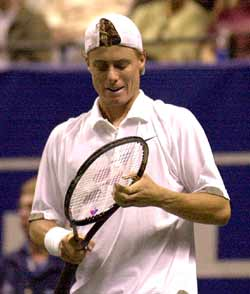

Mental Toughness Training: The 16 Second Cure - Part 2¶
By Jim Loehr¶
¶

Top players stay emotionally positive by developing their own unique patterns of between point behavior.
In the last article we identified the 4 Stages of the 16-Second Cure and how top players use this time between points to maintain their Ideal Performance State. Now let's talk a little more about how to get used to practicing the stages and how to incorporate them into your own play.
For every player this should be a creative, individual process. Let's take a look at some of the top (and most mentally tough) players in the pro game and see how they have ritualized the between point times and created their own distinctive patterns.
This will give you some ideas about the range and variations. The next step is for you to develop your personal version of the 16 Second Cure, putting your distinctive stamp on the 4 stages.
Developing your own version of the 4 Stages will give you more emotional control that will lead to more confidence. In match play, it can become a positive emotional oasis. No player can completely control what happens on the court. But every player can learn to control how he reacts to what happens by practicing the 16-second cure.
 \
Can you recognize the 4 Stages of the 16 Second Cure as practiced by
the top players?
\
Can you recognize the 4 Stages of the 16 Second Cure as practiced by
the top players?
It should be a fun, creative process. Take your time, use your intuition, and experiment over a series of matches.
| ### 4 Stages or the 16 Second Cure: |
|---|
| - **Stage 1 Positive Physical |
| Response 3-5 Seconds ** |
| - **Stage 2 Relaxation 5-15 |
| Seconds ** |
| - **Stage 3 Preparation 3-5 |
| Seconds ** |
| - **Stage 4 Ritual 5-8 Seconds ** |
| - **TOTAL 16-25 Seconds ** |
By mastering and personalizing the 4 Stages, you will develop the ability to create calm in the center of the storm.
From this calm center, your best tennis will emerge naturally, fueled by your positive emotions. This is what we call the Ideal Performance State.
Virtually every top player practices his own version the 16 Second Cure. See it for yourself the next time you watch professional tennis.
If you pay attention, you can easily identify the stages as the top players go through them.
For the pros they become a matter of routine. But if you are trying to develop the 4 stages for the first time yourself, it can seem like a radical and unfamiliar departure from old patterns.

**Agassi, like successful, often pumps himself up after a good shot.**
The primary adjustment most players need to make is learning to take more time. Below the pro level, the majority of players play far too quickly.
This tends to be particularly true if a player has played an especially good point or an especially bad point. He will typically step up and try to play the next point in as little as five seconds.
If this sounds like you, the first step in learning to develop emotional control is simply learning to control the pacing of the time between points.
Wear a watch during your practice matches and determine how long you are currently taking. Five seconds? Ten seconds? Does it vary with the situation?
Now work to slow down. At first, some players feel as if they are stalling or delaying play. Sometimes, old opponents will question this new behavior.
Learn to enjoy playing at a new rhythm. Notice that by setting the pace, you're exerting more control over the course of the match and ultimately the outcome.
Give yourself time to get familiar with the stages.
If you've not practiced them before, it will take you several matches or more to get comfortable and adapt them.
As you become comfortable with taking a minimum of 16 seconds, work to become more precise in the practice and differentiation of the stages.

**Stage1: Serena stays positive by rehearsing corrections after an error.**
Allow yourself to experiment and begin to create your own unique rituals. Over the time you can learn to integrate the 4 stages seamlessly into your on-court behavior.
Here are the summaries of the 4 stages and examples of how pro players have truly made the 16-second cure their own.
[Stage 1: Positive Physical Response.] By staying positive with your body, you facilitate the flow of positive energy and reduce the chance that anger, disappointment, or any other disruptive emotional response might interfere with the next point.
No matter how the point ends, maintain a strong, positive posture. You can pump yourself up for a great shot. This has become common at all levels of professional and junior tennis.
You can acknowledge a great shot by your opponent. We've all seen Agassi do this even at critical points in close matches.
You can rehearse the correction to an error. Serena Williams is a top player who frequently rehearses her strokes after errors to stay mentally and emotionally positive.

**Stage 2: Agassi recovers from the previous point, typically staying focused on the strings.**
Now, winner or error, turn and walk away from the point with your shoulders back. It's good to place the racquet in your non-dominant hand.
Your arms should be relaxed, your head up, and your eyes forward and down. No matter what the outcome of the point, your body language should be the same.
[Stage Two: Relaxation.] Allow your body to recover from the physical and emotional stress of the point, your breathing to stabilize, and your arousal to return to an optimal range. Walk across the baseline. If necessary, walk back and forth to regain your equilibrium.
Typically in Stage 2 players focus on the strings of the racquet. Keep your thoughts and self talk to a minimum, limited to things like \"Stay calm, it's OK, no problem, keep fighting, etc..\"

**Stage 3: As Guga moves into position, he thinks how to play the next point, keeping a strong, positive body posture.**
[Stage Three: Preparation.] Know what the score is, where you are in the match, and how you intend to play the next point.
Where are you going to serve? What patterns are you going to play? Are you going to attack an opponent's weakness? Serve into the body? Follow the first serve to the net? Rally from the baseline? Attack the first short ball?
Many players step up to serve or receive with absolutely no idea of how they plan to play the next point. On each and every point you should take the time to manage the strategic direction of the match and assess your play in relation to your overall game plan.
Stage 3 begins as a player moves into position to play. Frequently, players make a strong statement with their bodies, looking up to the opponent's side and adopting a posture that seems to say: \"I'm going to win this point!\"

**Stage 4: Watch Agassi's unique return ritual.**
[Stage 4: Ritual.] Ritual allows you to reach the highest state of mental and physical readiness prior to the start of the point. Your personal sequence of automatic physical movements deepens your concentration, balances intensity and relaxation, and produces instinctive automatic play.
Your ritual on serve should include several ball bounces, followed by a pause just before the start of the motion. On your return, it can be a series or rapid steps or a swaying motion in the ready position.
But no two pros look exactly the same. Your rituals should be just as individual. Watch Agassi's distinctive pattern of steps forward and back before going into his ready position for the return.
Or the way he often neatly folds his shirttail around his waist at the start of a point. Or the way he selects the balls from the ball boys on his service points, taking three balls but then discarding one and keeping two.

**Click Photo: Sampras has developed his own unique ritual, using one ball to start his service points.**
Pete Sampras has his own variation on ball selection. He keeps only one ball for his first serve, taking the second ball if he hits a fault. You can also probably visualize the way Pete wipes the sweat off his forehand with just one finger. These are just a few pro examples.
Some of the greatest players of all time also had the most distinctive rituals.
Think of the way Jimmy Connors pumped himself up (and the crowd) after a big point, or think of John McEnroe's unique rocking motion up and down at the start of his serve.
You can create your own rituals that are every bit as distinctive. Experiment to find your own between point pacing, movement patterns, and rhythms, both in your service and return games. This is a big key to staying comfortable, positive, and retaining a sense of control when the pressure goes up.
As you develop your ability to follow the 4 Stages, and to make them your own, you will start to feel differently both on the court and after your matches.

**Click Photo: Practicing the stages will lead to more fun and more competitive success.**
You will find that you start to make more big shots under pressure, and also, to recover more quickly from your errors.
This will translate into more pleasure playing competitive tennis, as well as more success. Players sometimes report feeling refreshed and energized even after having played long matches. This is because they are generating and sustaining their own IPS for the first time.
Practicing the stages, will help learn to access your Ideal Performance State on a consistent basis. With practice, you will be every bit as tough in your matches as the toughest of the pros.
himself who still competes nationally in USTA events, Jim created the field of Mental Toughness training with his revolutionary study of elite pro players. He has been one of the most influential voices in tennis and tennis coaching for over 30 years, and is the author of multiple best selling books. He has expanded his influence far beyond sports with the creation of the Human Performance Institute where he and his staff have worked with hundreds of leaders in business, law enforcement, and military special forces. For the last decade he has also directed an academy for junior players helping young people learn what winning in life really means.